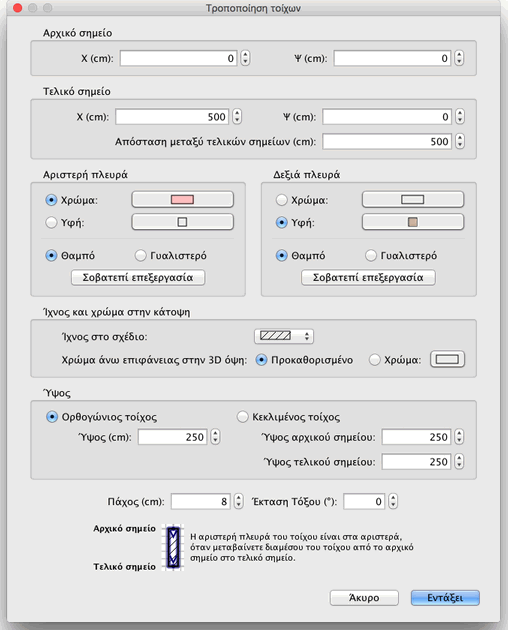

| Επεξεργασία τοίχων | |||
Μπορείτε να επεξεργαστείτε τη θέση και το μήκος των τοίχων της οικίας, είτε με το ποντίκι είτε με το μενού Σχέδιο > Τροποποίηση τοίχων.... Όταν επιλέγετε έναν τοίχο στο σχέδιο μπορείτε επίσης να μετακινήσετε το αρχικό και το τελικό του σημείο του με τον δείκτη σημείων που εμφανίζεται σε κάθε άκρο του επιλεγμένου τοίχου.
|

|
Όταν ο ενδείκτης θέσης ποντικιού βρίσκεται πάνω από το αρχικό ή τελικό σημείο του επιλεγμένου τοίχου, αλλάζει για να σας υποδείξει ότι μπορείτε να σύρετε και να αφήσετε το σημείο για να το μετακινήσετε. Ενώ πατάτε το κουμπί του ποντικιού, μια συμβουλή εργαλείου σας δείχνει το μήκος του τοίχου. Μπορείτε επίσης να επεξεργαστείτε έναν τοίχο χάρη στον πίνακά του, κάνοντας διπλό κλικ στο σχετικό έπιπλο στο σχέδιο οικίας ή επιλέγοντας Σχέδιο > Τροποποίηση τοίχων... αφού το επιλέξετε.  Στον πίνακα τοίχου μπορείτε να αλλάξετε τις συντεταγμένες των αρχικών και τελικών του σημείων, τα χρώματα ή τις υφές των αριστερών και των δεξιών πλευρών του, το πάχος και το ύψος του. |
|